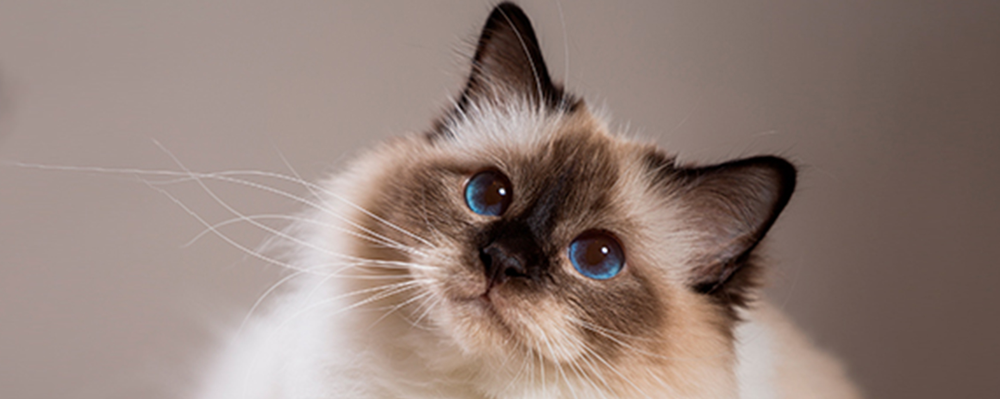
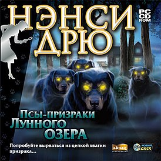

Являясь одним из самых популярных животных-компаньонов,
кошка находится в постоянном общении с человеком,
в связи с чем её поведение подвержено его сильному воздействию.
Но несмотря на это, кошки любят делать всё по-своему, «бродить,
где вздумается» и «улизнуть в сумерки и порыскать по задворкам».
Моя семья
Кем является для меня
Имя
Возраст
папа
Рашид
56
мама
Гузель
51
брат
Искандер
27
Мои любимые игра
Sims
Являясь одним из самых популярных животных-компаньонов,
кошка находится в постоянном
Являясь одним из самых популярных животных-компаньонов,
кошка находится в постоянном Являясь одним из самых популярных животных-компаньонов,
кошка находится в постоянном
Являясь одним из самых популярных животных-компаньонов,
кошка находится в постоянном

Нэнси Дрю
Являясь одним из самых популярных животных-компаньонов,
кошка находится в постоянном
Являясь одним из самых популярных животных-компаньонов,
кошка находится в постоянном Являясь одним из самых популярных животных-компаньонов,
кошка находится в постоянном
Являясь одним из самых популярных животных-компаньонов,
кошка находится в постоянном
Left4Dead2
 Left4Dead2
Left4Dead2